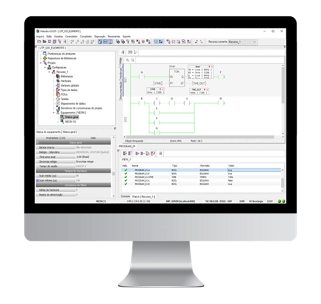

Ambiente de programação dos CLPs G5
O HIstudio é um ambiente de software desenvolvido para a programação, configuração, depuração e documentação de programas dos controladores da HI Tecnologia. Disponibiliza as linguagens de programação ST (Texto Estruturado) e LD (Ladder), com bibliotecas de funções aderentes à norma IEC 61131-3 e suporte para criação de funções e blocos de funções. Nesta etapa você deverá assistir aos cursos e playlists e reproduzir todo conteúdo ensinado, além de realizar programas para praticar os recursos do ambiente nas duas principais linguagens disponíveis. Não se esqueça de salvar os arquivos das aulas em pastas individuais para cada tema, na sua pasta localizada em: L:\GAdmn\DSuporte Tecnico\Minha Pasta.

Para trabalhar nesta etapa você precisará utilizar os Kits de Treinamento NTK400 e RTK510, acesse as páginas dos produtos e baixe os manuais, leia a documentação dos Kits para entender o seu funcionamento antes de iniciar no ambiente de programação.
Acessar Manual do NTK400 Acessar Manual do RTK510Assista a playlist do curso de programação em Ladder no HIstudio e reproduza o que foi ensinado:
Assista aos cursos de programação em Texto Estruturado no HIstudio e reproduza o que foi ensinado:
Após assistir os cursos e reproduzir o que foi ensinado você terá alguns programas em Ladder e em ST, reescreva o programa que foi feito na linguagem Ladder para a linguagem ST e reescreva o programa que foi feito na linguagem ST para a linguagem Ladder.
Baixe um programa de exemplo da engenharia de aplicação da HI e observe como é feita toda a parte de documentação e comentários, aplique em seus projetos o conceito.
Acessar conteúdoApós assistir os treinamentos de Ladder e ST no HIstudio e realizar as atividades anteriores, faça a lista de exercícios a seguir, tanto na linguagem Ladder quanto na Linguagem ST:
Acessar Lista de ExercíciosAssista aos tutoriais complementares e de reforço de conceito sobre funcionalidades do HIstudio a seguir e reproduza os conteúdos: